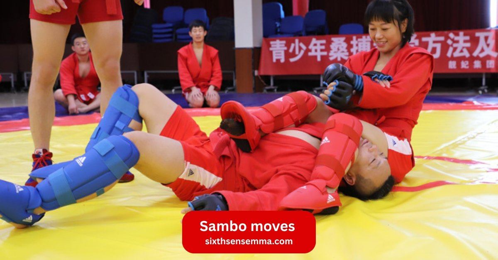
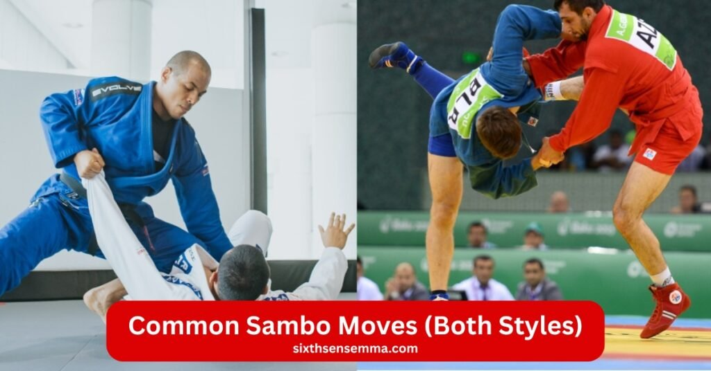
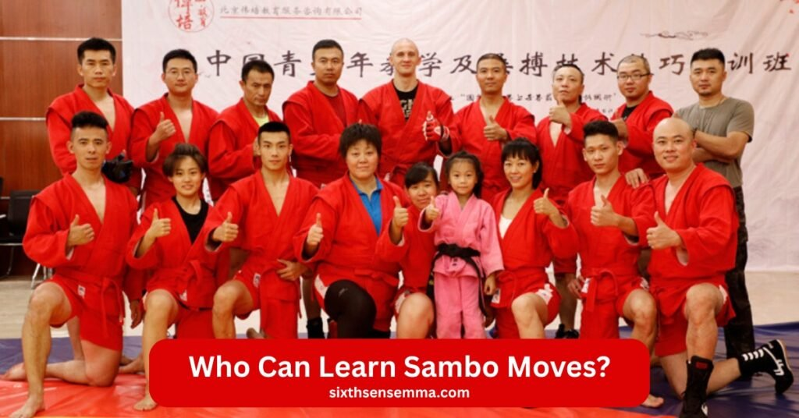

Most Effective Sambo Moves Easy Throws, Locks & Self-Defense by Sixth Sense MMA

Sambo moves at Sixth Sense MMA. Russian martial art mixes judo throws and wrestling force. Sambo fighters master joint locks and leg locks. Combat sambo adds strikes. Sport sambo stays grapple-only. Sambo training builds hand-to-hand combat skills for kids and adults. Mma pros use sambo techniques. Black belt coaches teach throws. Join now and learn sambo. International sport hosts sambo championships. Amateur sambo packs sambo events. Styles of sambo fit fighting styles. Type of sambo picks kind of sambo. Sambo combat strikes real. Combat system wins combat situations. Recognized martial art rules mats. Former soviet union roots feed sambo today.
Most Effective Types Sambo Moves
- Sport Sambo (Only Grappling)
- Combat Sambo (Fighting + Self-Defense)
- Common Sambo Moves (Both Styles)
Sport Sambo (Only Grappling)
Sambo stands as a russian martial art. Vasili oshchepkov and viktor spiridonov shaped it in the former soviet union. Oshchepkov mixed judo with wrestling. Spiridonov added hand-to-hand combat from fighting systems. Anatoly kharlampiev refined the art and combat sport developed. Sambo is a russian blend of throws and grappling. Sport sambo drops strikes. It keeps grapple clean. Sambo wrestling rules the mat. Sambo fighters wear the sambo uniform. Black belt marks skill. Sambo today shines as an international sport. Amateur sambo fills sambo championships. Sambo world hosts sambo events. Learn sambo for ground control and throws and takedowns. Sambo techniques build hand-to-hand combat skills. Freestyle sambo allows more.
Throws
Throwing techniques start sport sambo. Hip throw lifts the foe. Sambo fighters time the grip on the sambo uniform. Throws and takedowns drop foes hard. Judo roots show in the spin. Wrestling adds power. Sambo techniques blend both. Grapple turns to flight. Sambo wrestling scores points with clean lands. Throws control the pace. Hand-to-hand combat ends quick with a slam. Sambo moves fly in sambo championships. Sambo events reward height and speed.
Leg Moves
Leg locks twist on the mat. Sambo moves target knees and ankles. Submission techniques force taps. Sambo fighters chain from throws. Leg moves lock tight after takedowns. Joint locks bend the wrong way. Grappling techniques shine here. Sambo training drills the heel hook. Combat techniques stay banned in sport sambo but leg locks rule. Sambo skills grow with practice. Hand-to-hand combat skills include the twist. Sambo uniform grips help the pull.
Ground Moves
Ground control owns the fight. Sambo moves pin and turn. Submission techniques hunt arms and necks. Joint locks crank slow. Sambo wrestling rolls smooth. Grapple stays active. Sambo fighters switch sides fast. Throws and grappling lead to the mat. Sambo techniques finish with holds. Unarmed combat tests stamina. Sambo training builds the base.
Switching
Switching flips the script. Sambo moves reverse pins. Grappling techniques escape bad spots. Sambo fighters bridge and shrimp. Throws set up the flip. Leg moves chain to top. Ground moves end with control. Sambo skills adapt live. Hand-to-hand combat abilities demand flow. Sambo wrestling rewards the turn. Sport sambo points the switch.
Combat Sambo (Fighting + Self-Defense)
Combat sambo turns sambo into a full combat sport. Sambo fighters wear the sambo uniform over shorts. World combat sambo federation runs combat sambo competitions. Sambo championships mix striking techniques with grappling techniques. Throwing techniques slam foes. Joint locks bend arms. Leg locks twist limbs. Submission techniques force taps. Soviet military built combat sambo for hand-to-hand combat. Vasili oshchepkov added judo. Anatoly kharlampiev shaped sambo wrestling. Viktor spiridonov brought hand-to-hand combat abilities. Special sambo fits elite. Combat techniques hit hard in combat situations. Sambo training drills sambo skills for mma. Mixed martial arts love sambo moves. Wrestling grips set throws and takedowns.
Hitting Moves
Striking techniques open fights. Punches snap jaws. Kicks crush knees. Elbows slice skin. Knees drive guts. Hitting moves set throws and takedowns. Combat techniques chain to ground. Sambo fighters strike then grapple. Hand-to-hand combat skills flow raw. Sambo moves punish stands. Mma pulls these punches.
Locking Moves
Joint locks trap elbows. Leg locks snap ankles. Locking moves crank slow. Submission techniques end pain. Ground control pins tight. Sambo techniques twist from top. Grapple turns fight over. Sambo skills submit quick. Wrestling feeds the hold. Judo arms inspire locks.
Weapon Defens
Weapon defens saves lives. Disarming techniques strip knives. Gun grabs yank barrels. Sambo techniques redirect blades. Combat sambo drills grabs. Hand-to-hand combat beats steel. Self-defense core shines. Soviet military honed grabs. Special sambo owns streets. Practical techniques turn arms.
Strong Takedowns
Strong takedowns crash mats. Hip throw flips hips. Double legs blast low. Throws and takedowns score big. Sambo wrestling drives power. Combat techniques follow strikes. Grappling techniques chain slams. Sambo moves control falls. Fighting systems build force. Sambo fighters own feet.

Common Sambo Moves (Both Styles)
Sambo moves blend sport sambo and combat sambo. Sambo fighters grip the sambo uniform. Throwing techniques crash foes. Grappling techniques chain to ground. Joint locks bend elbows. Leg locks twist knees. Submission techniques tap fast. Sambo wrestling scores throws and takedowns. Black belt pros drill sambo techniques. Sambo championships test sambo skills. World combat sambo federation runs combat sambo competitions. American sambo association grew freestyle sambo. Vasili oshchepkov fused judo. Anatoly kharlampiev built throws. Viktor spiridonov added hand-to-hand combat. Soviet military honed special sambo. Combat sport mixes mma. Wrestling drives power. Mixed martial arts pulls sambo moves. Sambo training forges hand-to-hand combat abilities.
Arm Lock
Arm lock cranks elbows. Joint locks hyperextend fast. Submission techniques force taps from mount. Sambo fighters chain after throws and takedowns. Grapple turns arm wrong. Sambo techniques hit side control. Hand-to-hand combat skills finish standing. Sambo wrestling scores the hold. Black belt locks clean. Sambo moves blend judo arms. Wrestling grips set the pull. Mma loves the crank.
Off-Balance
Off-balance breaks stance. Sambo moves pull forward. Throwing techniques tip foes. Sambo fighters yank sleeves on sambo uniform. Grappling techniques disrupt base. Sambo techniques feint then load. Hand-to-hand combat shifts weight. Combat situations expose holes. Sambo skills read posture. Practical techniques drop guard. Sambo training drills kuzushi. Judo roots feed the pull. Wrestling sprawls counter.
Foot Sweep
Foot sweep reaps low. Sambo moves hook ankle out. Throwing techniques lift toes. Sambo fighters time the step. Grappling techniques sweep inside. Sambo wrestling scores clean lands. Sambo techniques chain from clinch. Hand-to-hand combat skills trip fast. Sambo skills evade strikes first. Combat sambo sweeps after punches. Judo ouchi gari shines. Wrestling trips blend. Sambo championships reward speed.
Leg Hook
Leg hook reaps thigh. Sambo moves inside or outside. Throwing techniques lift knee. Sambo fighters drive hip through. Grappling techniques block escape. Sambo techniques follow to ground. Submission techniques chain leg locks. Sambo wrestling drops hard. Hand-to-hand combat hooks in clinch. Combat techniques mix elbows. Judo ko uchi gari flows. Wrestling power pulls. Black belt hooks pro.
Why Learn Sambo Moves?
Sambo moves fuse combat sambo and sport sambo. Sambo fighters drill throws and grappling. Joint locks snap limbs. Leg locks twist ankles. Submission techniques end fights. Throwing techniques slam hard. Sambo wrestling pins tight. Black belt pros mix striking techniques in combat sambo competitions. World combat sambo federation crowns champs. American sambo association spreads freestyle sambo. Vasili oshchepkov built judo base. Anatoly kharlampiev added wrestling. Viktor spiridonov forged hand-to-hand combat. Soviet military shaped special sambo. Sambo training sharpens sambo skills. Mma pulls mixed martial arts gold. International sport hosts sambo championships. Amateur sambo fills sambo events. Styles of sambo fit fighting styles.
Build Strong Self-Defense
Sambo moves stop attacks. Hand-to-hand combat abilities disarm foes. Combat techniques redirect knives. Throwing techniques crash threats. Joint locks break holds. Sambo fighters control streets. Special sambo fits soviet military. Practical techniques work real. Hand-to-hand combat skills save fast. Sambo training readies combat situations. Combat sambo adds punches. Self-defense grows daily.
Get Fit and Strong
Sambo training burns fat. Throws and takedowns lift weight. Grappling techniques build muscle. Sambo wrestling tests lungs. Sambo moves sprint and roll. Submission techniques grip hard. Sambo fighters stay lean. Wrestling power surges. Judo throws tone core. Sambo skills shape body. Mma cross fits perfect.
Win in Competitions
Sambo championships award gold. Sambo moves score points. Throwing techniques land clean. Leg locks force taps. Sambo wrestling pins for win. Black belt fights smart. Combat sambo competitions mix strikes. World combat sambo federation sets rules. Amateur sambo builds champs. Sambo events crown kings. International sport tests best.
Learn Real MMA Skills
Mixed martial arts needs sambo. Sambo moves ground and pound. Grappling techniques control cage. Striking techniques set throws. Sambo fighters finish fights. Combat sambo blends all. Hand-to-hand combat feeds mma. Sambo techniques chain smooth. Wrestling drives takedowns. Judo arms lock subs.
Boost Confidence
Sambo moves grow belief. Sambo skills walk tall. Hand-to-hand combat abilities calm fear. Sambo training proves strength. Submission techniques show power. Sambo fighters stand firm. Combat situations lose scare. Practical techniques build trust. Black belt earns respect. Sambo uniform feels proud.
Fun for Kids and Adults
Sambo world laughs and learns. Kids roll safe on mat. Adults chase throws. Sambo moves spark joy. Grapple turns play. Sambo training bonds teams. Sambo events cheer loud. Fun meets skill. Russian martial art fits all ages. Sambo today keeps smiles. Learn sambo stays light.
Benefits of Learning Sambo Moves
Sambo moves mix sport sambo with combat sambo. Sambo fighters grip the sambo uniform. Throwing techniques lift foes. Joint locks bend arms. Leg locks twist legs. Submission techniques tap out. Grappling techniques pin tight. Striking techniques hit in combat sambo competitions. World combat sambo federation sets rules. American sambo association grows freestyle sambo. Vasili oshchepkov fused judo. Anatoly kharlampiev added wrestling. Viktor spiridonov built hand-to-hand combat. Soviet military shaped special sambo. Sambo training forges sambo skills. Mma pulls mixed martial arts wins. International sport runs sambo championships.
Practical Real-World Self-Defense Training
Sambo moves stop real threats. Hand-to-hand combat abilities disarm fast. Combat techniques redirect weapons. Throwing techniques crash attackers. Joint locks break grips. Sambo fighters own streets. Special sambo fits soviet military. Practical techniques work outside rings. Hand-to-hand combat skills protect daily. Sambo training readies combat situations. Combat sambo adds strikes. Self-defense stays sharp.
Full Body Fitness
Sambo training works every muscle. Throws and takedowns lift body weight. Grappling techniques tone arms. Sambo wrestling builds legs. Sambo moves sprint and roll. Submission techniques grip tight. Sambo fighters stay strong. Wrestling power grows. Judo throws shape core. Sambo skills burn fat. Mma cross keeps fit.
Train to Win in Competitions
Sambo championships give medals. Sambo moves earn points. Throwing techniques land perfect. Leg locks force quits. Sambo wrestling pins win. Black belt fights smart. Combat sambo competitions mix all. World combat sambo federation crowns best. Amateur sambo builds winners. Sambo events test limits. International sport rewards skill.
MMA & Grappling Power
Mixed martial arts needs sambo. Sambo moves control ground. Grappling techniques cage foes. Striking techniques set throws. Sambo fighters finish rounds. Combat sambo blends full. Hand-to-hand combat powers mma. Sambo techniques chain wins. Wrestling drives force. Judo arms lock subs.
More Confidence
Sambo moves raise head high. Sambo skills walk bold. Hand-to-hand combat abilities kill doubt. Sambo training proves worth. Submission techniques show control. Sambo fighters stand tall. Combat situations feel safe. Practical techniques build trust. Black belt earns pride. Sambo uniform boosts spirit.
Fun & Safe Training
Sambo world laughs on mats. Kids roll easy. Adults chase throws. Sambo moves spark play. Grapple turns game. Sambo training bonds friends. Sambo events cheer big. Fun meets work. Russian martial art fits ages. Sambo today keeps light. Learn sambo stays safe.

Who Can Learn Sambo Moves?
Sambo moves fit every body. Sambo fighters start young or late. Throwing techniques lift light or heavy. Joint locks bend all arms. Leg locks twist any leg. Submission techniques tap fast. Grappling techniques pin kids or pros. Striking techniques hit in combat sambo competitions. World combat sambo federation welcomes all. American sambo association opens freestyle sambo. Vasili oshchepkov mixed judo for everyone. Anatoly kharlampiev added wrestling power. Viktor spiridonov built hand-to-hand combat. Soviet military used special sambo. Sambo training scales sambo skills. Mma pulls mixed martial arts from all. International sport runs sambo championships. Amateur sambo fills sambo events. Styles of sambo match fighting styles.
Perfect Martial Arts Training for Kids 5+
Kids roll safe from age five. Sambo moves teach balance. Throws and takedowns play light. Grappling techniques build friends. Sambo wrestling grows strong. Sambo training adds games. Sambo uniform fits tiny. Black belt path starts early. Hand-to-hand combat skills grow slow. Sambo events cheer young champs. Learn sambo stays fun.
Confidence-Building Martial Arts for Teens
Teens chase throws. Sambo moves burn energy. Joint locks test limits. Submission techniques spark wins. Sambo fighters build teams. Wrestling power surges. Judo throws fly high. Sambo skills shape leaders. Combat sambo adds edge. Sambo championships call names. Mma dreams start here.
Skill-Focused MMA & Fitness for Adults
Adults drop stress on mats. Sambo moves fit busy lives. Throwing techniques lift weight. Grappling techniques tone fast. Sambo wrestling clears mind. Hand-to-hand combat abilities grow real. Sambo training fits nights. Black belt goals pull hard. Combat techniques stay sharp. Sambo events bond groups.
Empowering Self-Defense & Fitness for Women
Women own sambo. Sambo moves build power. Joint locks lock tight. Leg locks twist strong. Submission techniques finish clean. Sambo fighters stand tall. Grappling techniques control all. Striking techniques hit hard in combat sambo. Sambo uniform fits curves. Hand-to-hand combat skills protect. Sambo world cheers loud.
Beginner-Friendly Training for All Levels
Beginners step in easy. Sambo moves start slow. Throws and takedowns learn step by step. Grappling techniques roll safe. Sambo training guides hands. Sambo uniform feels new. Sambo skills grow daily. Hand-to-hand combat builds base. Practical techniques click fast. Learn sambo welcomes zero.
Advanced Training for Competitive Fighters
Pro fighters sharpen sambo. Sambo moves add tools. Throwing techniques chain strikes. Joint locks finish rounds. Sambo wrestling cages foes. Mma pulls combat sambo. World combat sambo federation tests best. Black belt fights smart. Sambo championships crown kings. Combat techniques win big.
Why Choose Sixth Sense MMA for Mix Martial Art?
Sambo moves land hard at Sixth Sense MMA. Sambo fighters grip the sambo uniform. Throwing techniques slam clean. Joint locks bend arms. Leg locks twist legs. Submission techniques force taps. Grappling techniques pin tight. Striking techniques fly in combat sambo competitions. World combat sambo federation sets standards. American sambo association pushes freestyle sambo. Vasili oshchepkov mixed judo. Anatoly kharlampiev added wrestling. Viktor spiridonov built hand-to-hand combat. Soviet military shaped special sambo. Sambo training sharpens sambo skills. Mma pulls mixed martial arts gold. International sport hosts sambo championships.
Free Trial Class
Free trial class opens the door. Sambo moves feel first hand. Throws and takedowns land soft. Grappling techniques roll easy. Sambo training shows the flow. Hand-to-hand combat skills spark interest. Sambo uniform fits free. Black belt coaches watch close. Sambo skills click quick. Learn sambo starts no cost.
Expert Coaches
Expert coaches guide every grip. Sambo fighters learn from black belt pros. Throwing techniques fix form. Joint locks teach angle. Sambo techniques chain smooth. Wrestling power grows. Judo throws fly true. Combat sambo adds strikes. Hand-to-hand combat abilities build fast. Sambo training stays pro.
Small Groups
Small groups give eyes on you. Sambo moves correct live. Grappling techniques drill personal. Submission techniques fit your size. Sambo wrestling pairs perfect. Throws and takedowns spot safe. Sambo skills grow deep. Combat techniques sharpen one by one. Sambo events prep close.
Safe & Fun Training
Safe mats cushion falls. Fun rolls laugh loud. Sambo moves play smart. Grappling techniques bond teams. Sambo training keeps smiles. Hand-to-hand combat stays light. Sambo uniform moves free. Practical techniques teach care. Sambo world feels home. Learn sambo lifts spirits.
Coppell’s Top Gym
Coppell’s top gym packs sambo. Sambo championships train here. Mma stars drill sambo moves. Combat sambo competitions prep wins. Sambo fighters call it base. International sport roots local. Sambo events start strong. Russian martial art rules town. Sambo today shines bright.
Kids & Adults Programs
Kids start age five with throws. Adults chase leg locks. Sambo moves fit all. Grappling techniques scale easy. Sambo training splits groups. Sambo uniform sizes match. Black belt path opens wide. Hand-to-hand combat skills grow together. Sambo skills build family. Combat sport welcomes every age.
Contact Us
Sambo moves wait at Sixth Sense MMA. Sambo fighters roll on clean mats. Throwing techniques lift high. Joint locks bend smooth. Leg locks twist tight. Submission techniques tap quick. Grappling techniques pin firm. Recognized martial art calls home. Former soviet union roots live on. International amateur keeps safe. Practical techniques teach all. Hand-to-hand combat training forges unarmed combat. Official combat sport packs the gym. Martial art and combat sport flows daily. Russian martial art grips strong. Sambo uniform hangs ready. Grapple meets power. Sambo world opens wide. Reach out now. Phone 469-972-7800. Email info@sixthsensemma.com. Address 817 S MacArthur Blvd #100, Coppell, TX 75019, United States. Black belt coaches answer. Sambo skills start here.
Conclusion
Sambo moves change lives. Throws and takedowns build base. Grappling techniques control all. Submission techniques finish clean. Sambo wrestling pins wins. Combat techniques strike true. Hand-to-hand combat abilities grow real. Sambo training fits every age. Sambo fighters walk out stronger. Black belt dreams turn close. Sambo championships call names. Mma rings need sambo. Practical techniques save streets. Sambo uniform feels pride. Learn sambo stays open. Sambo today rules mats. Step in and grip the russian martial art.
Follow Us on Social Media
Stay connected with Sixth Sense MMA through our social media channels. Follow us for class updates, training tips, and a closer look at our self defense community.
FAQ’s
Sambo includes a wide range of techniques such as throws, hip tosses, leg locks, armlocks, sweeps, takedowns, ground pins, and submission holds. At Sixth Sense MMA, students learn both traditional sport Sambo moves and Combat Sambo variations for practical use in self-defense and MMA.
Sambo and jiu-jitsu each have unique strengths. Sambo emphasizes explosive takedowns and leg locks, while jiu-jitsu focuses heavily on ground control and submissions. At Sixth Sense MMA, many students train both because combining them creates a well-rounded grappling skill set.
Yes, Sambo is a highly respected martial art and officially recognized combat sport created in the former Soviet Union. It is practiced around the world and used by elite fighters. Sixth Sense MMA teaches Sambo with proper fundamentals, technique, and real-world application.
The two main types of Sambo are:
Sport Sambo – focused on throws, pins, and submissions.
Combat Sambo – includes striking, grappling, and self-defense techniques.
At Sixth Sense MMA, students can train techniques from both depending on their goals.
Sambo takedowns differ through their dynamic foot sweeps, leg attacks, and unconventional grips. Unlike judo, Sambo allows leg grabs. Unlike wrestling, Sambo uses submissions and more fluid throws. Sixth Sense MMA highlights these distinctions so students develop a unique grappling advantage.
Yes. Sambo takedowns work extremely well in jiu-jitsu, wrestling, judo, MMA, and real-world self-defense. At Sixth Sense MMA, instructors teach Sambo throws and takedowns that easily blend into multiple combat sports.
Combat Sambo mixes striking, grappling, takedowns, leg locks, and ground fighting into one complete system. It resembles MMA but maintains traditional Sambo mechanics and military-style efficiency. At Sixth Sense MMA, Combat Sambo is taught as a full fighting system, not just a grappling style.
If you’re excited to learn Sambo throws, takedowns, submissions, and Combat Sambo techniques, Sixth Sense MMA is the best place to start. Our coaches offer beginner-friendly training and advanced development for athletes, fighters, and hobbyists.
Train with us in Coppell
The first class is free. Shorts, a t-shirt and a water bottle. We lend the rest.
Book a free class